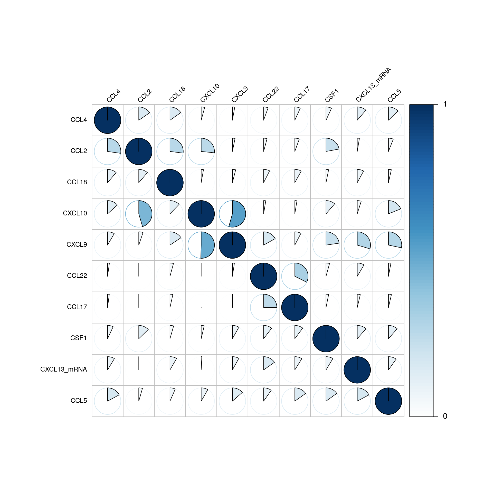
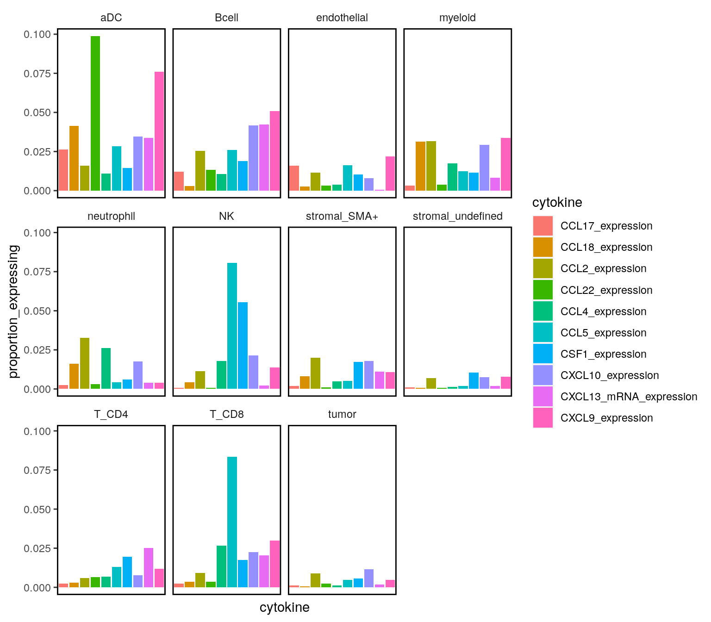
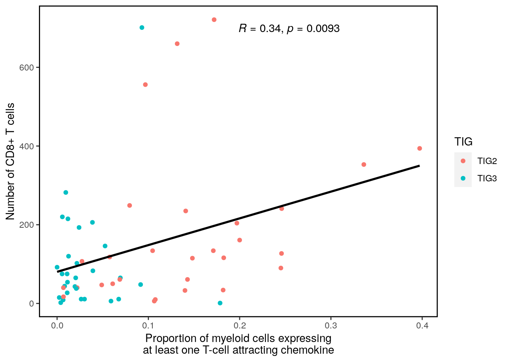
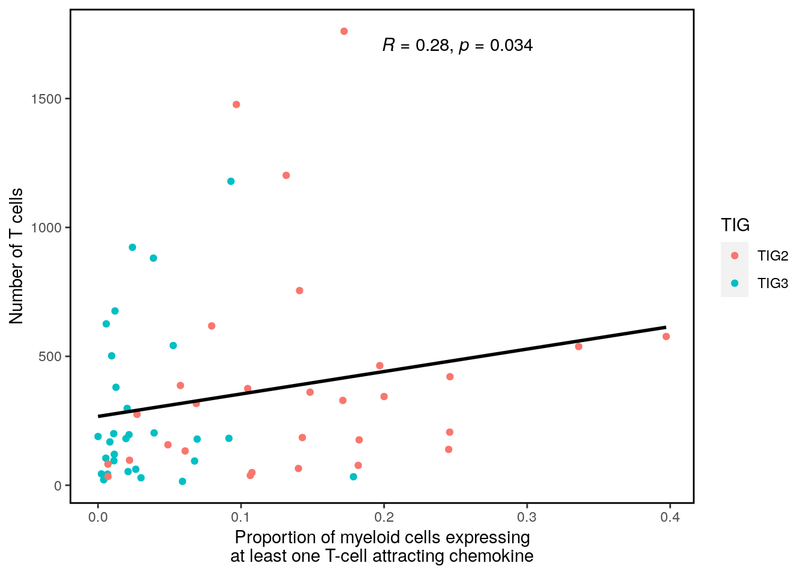

Last updated: 2020-11-23
Checks: 7 0
Knit directory: BCexh_IMC/
This reproducible R Markdown analysis was created with workflowr (version 1.6.2). The Checks tab describes the reproducibility checks that were applied when the results were created. The Past versions tab lists the development history.
Great! Since the R Markdown file has been committed to the Git repository, you know the exact version of the code that produced these results.
Great job! The global environment was empty. Objects defined in the global environment can affect the analysis in your R Markdown file in unknown ways. For reproduciblity it’s best to always run the code in an empty environment.
The command set.seed(12345) was run prior to running the code in the R Markdown file. Setting a seed ensures that any results that rely on randomness, e.g. subsampling or permutations, are reproducible.
Great job! Recording the operating system, R version, and package versions is critical for reproducibility.
Nice! There were no cached chunks for this analysis, so you can be confident that you successfully produced the results during this run.
Great job! Using relative paths to the files within your workflowr project makes it easier to run your code on other machines.
Great! You are using Git for version control. Tracking code development and connecting the code version to the results is critical for reproducibility.
The results in this page were generated with repository version a2b2d7d. See the Past versions tab to see a history of the changes made to the R Markdown and HTML files.
Note that you need to be careful to ensure that all relevant files for the analysis have been committed to Git prior to generating the results (you can use wflow_publish or wflow_git_commit). workflowr only checks the R Markdown file, but you know if there are other scripts or data files that it depends on. Below is the status of the Git repository when the results were generated:
Ignored files:
Ignored: analysis/.Rhistory
Untracked files:
Untracked: CD11c_CD68_scatter.png
Untracked: Neighbourhood_TLS_relative.pdf
Untracked: Neighbourhood_TLS_relative.png
Untracked: Neighbourhood_all_relative.pdf
Untracked: Neighbourhood_all_relative.png
Untracked: analysis/XX_RNApanel_neighbourhood.Rmd
Untracked: cytokine_environment.png
Untracked: data/RNAseq_Tcells.rds
Untracked: data/RNAseq_epithelial.rds
Untracked: data/ROI_info_HIER.csv
Untracked: data/ROI_info_RNAscope.csv
Untracked: data/cpout/
Untracked: data/masks/
Untracked: heatmap_markerexpression_myeloid_sub.png
Untracked: neighbourhood_myeloid_TIGdifference.png
Untracked: neighbourhood_myeloid_TLS_relative.png
Untracked: neighbourhood_myeloid_all_relative.png
Untracked: neighbourhood_myeloid_split_TLS.png
Untracked: output/ProteinPanel/
Untracked: output/RNApanel/
Untracked: output/TLS_score_25samples.png
Untracked: output/sce_ProteinPanel_afterQC.rds
Untracked: output/sce_ProteinPanel_initial.rds
Untracked: output/sce_ProteinPanel_initial_TLSrevised.rds
Untracked: output/sce_RNApanel_afterQC.rds
Untracked: output/sce_RNApanel_initial.rds
Untracked: output/sce_RNApanel_initial_TLSrevised.rds
Untracked: test_Treg_enrichment.png
Unstaged changes:
Modified: analysis/11_RNAscope_cytokine_communities.Rmd
Note that any generated files, e.g. HTML, png, CSS, etc., are not included in this status report because it is ok for generated content to have uncommitted changes.
These are the previous versions of the repository in which changes were made to the R Markdown (analysis/09_RNApanel_cytokine_expression.Rmd) and HTML (docs/09_RNApanel_cytokine_expression.html) files. If you’ve configured a remote Git repository (see ?wflow_git_remote), click on the hyperlinks in the table below to view the files as they were in that past version.
| File | Version | Author | Date | Message |
|---|---|---|---|---|
| Rmd | a2b2d7d | SandraTietscher | 2020-11-23 | Add distance measurements for T cell attracting myeloid cells |
| html | 54605dd | SandraTietscher | 2020-11-23 | Build site. |
| Rmd | ae16a44 | SandraTietscher | 2020-11-23 | Add distance measurements for T cell attracting myeloid cells |
| html | a335d31 | SandraTietscher | 2020-11-23 | Build site. |
| html | 557ad0c | SandraTietscher | 2020-11-10 | Build site. |
| Rmd | 196e575 | SandraTietscher | 2020-11-10 | Add boxplots for TIG comparison |
| html | 2bce676 | SandraTietscher | 2020-11-10 | Build site. |
| html | 0961920 | SandraTietscher | 2020-11-02 | Build site. |
| html | e86d32f | SandraTietscher | 2020-10-30 | Build site. |
| Rmd | 8628199 | SandraTietscher | 2020-10-30 | Add script to quantify cytokine expression |
| html | 10a7677 | SandraTietscher | 2020-10-30 | Build site. |
| Rmd | 1787ff8 | SandraTietscher | 2020-10-30 | Add script to quantify cytokine expression |
| html | 97b74e7 | SandraTietscher | 2020-10-30 | Build site. |
| Rmd | 49b1bad | SandraTietscher | 2020-10-30 | Add script to quantify cytokine expression |
This script defines cytokine-expressing cells, making use of the negative control mRNA DapB.
source("code/helper_functions/detect_mRNA_expression.R")
source("code/helper_functions/validityChecks.R")
library(SingleCellExperiment)
library(dplyr)
library(ggplot2)
library(scater)
library(reshape2)
library(data.table)
library(ComplexHeatmap)
library(corrplot)
library(pheatmap)
library(grid)
library(gridExtra)
library(tidyr)
library(ggpubr)
library(cowplot)
library(Hmisc)
sce_RNA <- readRDS("output/RNApanel/sce_RNApanel_celltypes.rds")
TIG2 <- c("TBB111", "TBB129", "TBB165", "TBB171", "TBB184", "TBB338")# get the names of the cytokine channels
cytokine_channels = c("CCL4", "CCL18", "CSF1", "CXCL10", "CXCL13_mRNA", "CCL2", "CCL22", "CXCL9", "CCL17", "CCL5")
# run function to define cytokine expressing cells
output_list <- compute_difference(sce_RNA,
cellID = "cellID",
assay_name = "exprs",
threshold = 0.01,
mRNA_channels = cytokine_channels,
negative_control = "DapB",
return_calc_metrics = TRUE)
# overwrite SCE object
sce_RNA <- output_list$output_sce# check difference between DapB and signal (histogram)
p.list <- list()
for(i in cytokine_channels){
# subset whole data set for visualization purposes
diff_chemo <- output_list[[i]]
diff_chemo_sub <- diff_chemo[sample(nrow(diff_chemo), nrow(diff_chemo)*0.1), ]
# significant cells defined by subtraction
c = ggplot(data=diff_chemo_sub, aes(x=mean_negative_control, y=mean_chemokine)) +
geom_point(alpha=0.2, aes(col =
ifelse(padj <= 0.01 & scaled_diff > 0 & mean_negative_control < 2.5, 'p<0.01', 'n.s.'))) +
scale_color_manual(values = c("black", "deepskyblue1")) +
xlim(0,4) + ylim(0,4) +
ylab(paste("Mean expression of", i, sep=" ")) +
xlab("Mean DapB mRNAexpression") +
ggtitle(paste("DapB mRNA vs.", i, sep = " ")) +
theme(legend.title = element_blank())
p.list[[i]] <- c
}
plot_grid(plotlist = p.list, ncol = 2)
cytokines <- data.frame(colData(sce_RNA))
cytokines <- cytokines[, cytokine_channels]
# calculate the amount of cells that are positive for 1, 2 and multiple combinations.
single_combinations = cytokines[rowSums(cytokines) == 1,]
# number of single-cytokine positive cells
nrow(single_combinations)[1] 23697double_combinations = cytokines[rowSums(cytokines) == 2,]
# number of double-cytokines positive cells
nrow(double_combinations)[1] 4594multiple_combinations = cytokines[rowSums(cytokines) >= 3,]
# number of cells that express 3 or more cytokines
nrow(multiple_combinations)[1] 1293# number of double positives per cytokine
double_counts <- colSums(double_combinations)
# frequency matrix and corrplot for frequency matrix
double_combinations[double_combinations == 0] <- NA
count_matrix = psych::pairwiseCount(x=double_combinations)
# normalize the frequency matrix by the amount of double combinations that occur for each cytokine
frequency_matrix <- count_matrix
for (i in colnames(count_matrix)){
frequency_matrix[,i] <- frequency_matrix[,i]/double_counts[i]
}The next plot shows the frequencies of all double positive cell occurences. e.g. of all CXCL10 expressing cells that also express another chemokine (More than 50% express CXCL9).
corrplot(frequency_matrix, is.corr = FALSE, tl.col = 'black', method = 'pie', type = 'full',
tl.srt = 45, tl.cex = 0.8, tl.offset = 0.5, cl.length = 2, cl.cex = 1, cl.align.text = "l", cl.ratio = 0.3,
diag=TRUE, order = "hclust")
| Version | Author | Date |
|---|---|---|
| 97b74e7 | SandraTietscher | 2020-10-30 |
Now we normalize the numbers of double positives by the numbers of all respective positive chemokines. this shows that usually between 20-40 percent of chemokine expressing cells are double positive expressors.
single_counts <- colSums(single_combinations)
frequency_matrix <- count_matrix
for (i in colnames(count_matrix)){
frequency_matrix[,i] <- frequency_matrix[,i]/single_counts[i]
}
corrplot(frequency_matrix, is.corr = FALSE, tl.col = 'black', method = 'pie', type = 'full',
tl.srt = 45, tl.cex = 0.8, tl.offset = 0.5, cl.length = 2, cl.cex = 1, cl.align.text = "l", cl.ratio = 0.3,
cl.lim = c(0,1), diag=TRUE, order = "hclust")
| Version | Author | Date |
|---|---|---|
| 97b74e7 | SandraTietscher | 2020-10-30 |
# general cytokine producer tag for every cell (logical binary)
sce_RNA$cytokine <- ifelse(rowSums(data.frame(colData(sce_RNA)[,cytokine_channels])) > 0, TRUE, FALSE)
# rename colData entry names
idx <- match(cytokine_channels, colnames(colData(sce_RNA)))
for(i in idx){
colnames(colData(sce_RNA))[i] <- paste0(colnames(colData(sce_RNA))[i], "_expression")
}
saveRDS(object = sce_RNA,file = "output/RNApanel/sce_RNApanel_celltypes_cytokines.rds")# Plot percentage of each cell type that expresses a certain cytokine
cytokine_prop <- data.frame("celltype" = levels(as.factor(sce_RNA$celltype)))
cytokine_colnames <- paste0(cytokine_channels, "_expression")
for (i in cytokine_colnames) {
cytokine_prop[[i]] <- prop.table(table(sce_RNA$celltype, colData(sce_RNA)[,i]), margin = 1)[,2]
}
cytokine_prop_g <- gather(cytokine_prop, key = "cytokine", value = "proportion_expressing", 2:11)
ggplot(cytokine_prop_g, aes(cytokine, proportion_expressing, fill = cytokine))+
geom_bar(stat="identity")+
facet_wrap(~celltype)+
theme(axis.ticks.x = element_blank(),
axis.text.x=element_blank(),
panel.background = element_blank(),
panel.border = element_rect(color = "black", fill = NA, size = 1),
strip.background = element_blank(),
legend.background = element_blank())+
ggtitle("Proportion of celltype that expresses a given cytokine")
| Version | Author | Date |
|---|---|---|
| 97b74e7 | SandraTietscher | 2020-10-30 |
ggplot(cytokine_prop_g, aes(celltype, proportion_expressing, fill = celltype))+
geom_bar(stat="identity")+
facet_wrap(~cytokine)+
theme(axis.ticks.x = element_blank(),
axis.text.x=element_blank(),
panel.background = element_blank(),
panel.border = element_rect(color = "black", fill = NA, size = 1),
strip.background = element_blank(),
legend.background = element_blank())+
ggtitle("Proportion of celltype that expresses a given cytokine")
| Version | Author | Date |
|---|---|---|
| 97b74e7 | SandraTietscher | 2020-10-30 |
sce_TLSex <- sce_RNA[,which(sce_RNA$TLS == "no")]
sce_TLSex$ImageNumber <- droplevels(sce_TLSex$ImageNumber)
# Plot percentage of each cell type that expresses a certain cytokine
cytokine_prop <- data.frame("celltype" = levels(as.factor(sce_TLSex$celltype)))
cytokine_colnames <- paste0(cytokine_channels, "_expression")
for (i in cytokine_colnames) {
cytokine_prop[[i]] <- prop.table(table(sce_TLSex$celltype, colData(sce_TLSex)[,i]), margin = 1)[,2]
}
cytokine_prop_g <- gather(cytokine_prop, key = "cytokine", value = "proportion_expressing", 2:11)
ggplot(cytokine_prop_g, aes(cytokine, proportion_expressing, fill = cytokine))+
geom_bar(stat="identity")+
facet_wrap(~celltype)+
theme(axis.ticks.x = element_blank(),
axis.text.x=element_blank(),
panel.background = element_blank(),
panel.border = element_rect(color = "black", fill = NA, size = 1),
strip.background = element_blank(),
legend.background = element_blank())
ggplot(cytokine_prop_g, aes(celltype, proportion_expressing, fill = celltype))+
geom_bar(stat="identity")+
facet_wrap(~cytokine)+
theme(axis.ticks.x = element_blank(),
axis.text.x=element_blank(),
panel.background = element_blank(),
panel.border = element_rect(color = "black", fill = NA, size = 1),
strip.background = element_blank(),
legend.background = element_blank())
In non-TLS images only.
# Compare total proportion of expressing cells
tab <- as.data.frame(prop.table(table(sce_TLSex$cytokine, sce_TLSex$TIG), margin = 2))
colnames(tab) <- c("Cytokine_expressing", "TIG", "proportion")
ggplot(tab, aes(TIG, proportion))+
geom_col(aes(fill=Cytokine_expressing))+
scale_fill_manual(values = c("#E69F00", "#56B4E9"))+
theme(axis.title.x = element_blank())
# Per sample
tab <- as.data.frame(prop.table(table(sce_TLSex$cytokine, sce_TLSex$sample), margin = 2))
colnames(tab) <- c("Cytokine_expressing", "sample", "proportion")
tab$TIG <- ifelse(tab$sample %in% TIG2, "TIG2", "TIG3")
tab<- tab %>% filter(tab$Cytokine_expressing == TRUE)
ggplot(tab, aes(x= TIG, y = proportion, color=TIG))+
geom_boxplot()+
geom_point()+
theme(axis.ticks.x = element_blank(),
axis.text.x=element_text(angle = 90, hjust=1),
axis.title.x = element_blank(),
panel.background = element_blank(),
panel.border = element_rect(color = "black", fill = NA, size = 1),
strip.background = element_blank(),
legend.background = element_blank())+
ylab("Of total [%]")+
stat_compare_means(method = "wilcox.test", aes(label=..p.format..), label.x.npc = 0.5)+
ggtitle("Proportion of cells expressing at least one cytokine")
| Version | Author | Date |
|---|---|---|
| 557ad0c | SandraTietscher | 2020-11-10 |
# For each celltype individually
celltypes <- levels(as.factor(sce_TLSex$celltype))
tab <- data.frame( TIG2 = double(), TIG3 = double())
for (i in celltypes) {
sce_i <- sce_TLSex[,which(sce_TLSex$celltype == i)]
tab[i,] <- prop.table(table(sce_i$cytokine, sce_i$TIG), margin = 2)[2,]
}
tab$celltype <- row.names(tab)
tab <- pivot_longer(tab, 1:2, names_to = "TIG", values_to = "proportion")
ggplot(tab, aes(celltype, proportion, fill = TIG))+
geom_bar(stat = "identity", positio = "dodge")+
theme(axis.text.x = element_text(angle = 90, hjust = 1, vjust = 0.25),
panel.border = element_rect(colour = "black", fill=NA, size=1),
panel.background = element_blank())+
ylab("Proportion expressing at least one cytokine")
# Per sample
tab <- data.frame(sample = names(prop.table(table(sce_RNA$sample))))
for (i in celltypes) {
sce_i <- sce_TLSex[,which(sce_TLSex$celltype == i)]
tab[,i] <- prop.table(table(sce_i$cytokine, sce_i$sample), margin = 2)[2,]
}
tab <- pivot_longer(tab, 2:12, names_to = "celltype", values_to = "proportion")
tab$TIG <- ifelse(tab$sample %in% TIG2, "TIG2", "TIG3")
ggplot(tab, aes(x= TIG, y = proportion, color=TIG))+
geom_boxplot()+
geom_point()+
facet_wrap(~celltype, ncol=6)+
theme(axis.ticks.x = element_blank(),
axis.text.x=element_text(angle = 90, hjust=1),
axis.title.x = element_blank(),
panel.background = element_blank(),
panel.border = element_rect(color = "black", fill = NA, size = 1),
strip.background = element_blank(),
legend.background = element_blank())+
ylab("Of total [%]")+
stat_compare_means(method = "wilcox.test", aes(label=..p.format..), label.x.npc = 0.5)+
ggtitle("Proportion of cells expressing at least one cytokine")Warning: Removed 1 rows containing non-finite values (stat_boxplot).Warning: Removed 1 rows containing non-finite values (stat_compare_means).Warning: Removed 1 rows containing missing values (geom_point).
| Version | Author | Date |
|---|---|---|
| 557ad0c | SandraTietscher | 2020-11-10 |
(per ROI, excluding TLS)
# T-attracting chemokine producer tag for every myeloid cell (logical binary)
sce_myeloid <- sce_TLSex[,which(sce_TLSex$celltype == "myeloid")]
sce_myeloid$Tattr_chemokine <- ifelse(rowSums(data.frame(colData(sce_myeloid)[,c("CCL2_expression", "CCL17_expression", "CCL4_expression", "CCL5_expression", "CXCL10_expression", "CXCL9_expression")])) > 0, TRUE, FALSE)
Tattr_chemokine_img <- prop.table(table(sce_myeloid$ImageNumber, sce_myeloid$Tattr_chemokine), margin = 1)[,2]
celltype_img <- as.data.frame(table(sce_TLSex$ImageNumber, sce_TLSex$celltype))
celltype_img <- pivot_wider(celltype_img, names_from = "Var2", values_from = "Freq")
Tattr_chemokine_comb <- cbind(Tattr_chemokine_img, celltype_img[,-1])
img_TIG <- as.data.frame(table(sce_TLSex$ImageNumber, sce_TLSex$TIG)) %>% filter(Freq > 0)
rownames(img_TIG) <- img_TIG$Var1
Tattr_chemokine_comb <- cbind(Tattr_chemokine_comb, img_TIG[,"Var2"][match(rownames(Tattr_chemokine_comb), rownames(img_TIG))])
colnames(Tattr_chemokine_comb)[13] <- "TIG"
corrs <- rcorr(as.matrix(Tattr_chemokine_comb[,1:12]), type = "spearman")
r_cor <- corrs$r[1, 2:12]
p_cor <- corrs$P[1, 2:12]
# Scatterplot
ggplot(Tattr_chemokine_comb, aes(Tattr_chemokine_img, T_CD8))+
geom_point(aes(color=TIG))+
geom_smooth(method = lm, color = "black", se=FALSE)+
stat_cor(method="spearman", label.x.npc = "middle")+
theme(panel.grid.major = element_blank(),
panel.grid.minor = element_blank(),
panel.border = element_rect(colour = "black", fill=NA, size=1),
panel.background = element_blank())+
xlab("Proportion of myeloid cells expressing\nat least one T-cell attracting chemokine")+
ylab("Number of CD8+ T cells")`geom_smooth()` using formula 'y ~ x'
ggplot(Tattr_chemokine_comb, aes(Tattr_chemokine_img, T_CD4))+
geom_point(aes(color=TIG))+
geom_smooth(method = lm, color = "black", se=FALSE)+
stat_cor(method="spearman", label.x.npc = "middle")+
theme(panel.grid.major = element_blank(),
panel.grid.minor = element_blank(),
panel.border = element_rect(colour = "black", fill=NA, size=1),
panel.background = element_blank())+
xlab("Proportion of myeloid cells expressing\nat least one T-cell attracting chemokine")+
ylab("Number of CD4+ T cells")`geom_smooth()` using formula 'y ~ x'
ggplot(Tattr_chemokine_comb, aes(Tattr_chemokine_img, T_CD4+T_CD8))+
geom_point(aes(color=TIG))+
geom_smooth(method = lm, color = "black", se=FALSE)+
stat_cor(method="spearman", label.x.npc = "middle")+
theme(panel.grid.major = element_blank(),
panel.grid.minor = element_blank(),
panel.border = element_rect(colour = "black", fill=NA, size=1),
panel.background = element_blank())+
xlab("Proportion of myeloid cells expressing\nat least one T-cell attracting chemokine")+
ylab("Number of T cells")`geom_smooth()` using formula 'y ~ x'
Set 800 as maximum distance. For images in which there is no T cell –> set distance parameter to max
max_dist <- 800
cur_sce <- data.frame(colData(sce_TLSex))
cellIDs_T <- cur_sce[cur_sce[,"celltype"] %in% c("T_CD4", "T_CD8"),]
cellIDs_CD4 <- cur_sce[cur_sce[,"celltype"] == "T_CD4",]
cellIDs_CD8 <- cur_sce[cur_sce[,"celltype"] == "T_CD8",]
new_sce <- data.frame(matrix(ncol=length(colnames(cur_sce))+3, nrow = 0))
# For each image separately: nearest neighbour search
for (j in unique(cur_sce$ImageNumber)) {
cur_sce_j <- filter(cur_sce, ImageNumber == j)
T_j <- filter(cellIDs_T, ImageNumber == j)[,c("Center_X", "Center_Y")]
CD8_j <- filter(cellIDs_CD8, ImageNumber == j)[,c("Center_X", "Center_Y")]
CD4_j <- filter(cellIDs_CD4, ImageNumber == j)[,c("Center_X", "Center_Y")]
# General T cell distance
if (nrow(T_j) == 0) {
cur_sce_j$T_distance <- max_dist
} else {
j_coord <- cur_sce_j[,c("Center_X", "Center_Y")]
nn <- RANN::nn2(T_j, j_coord)
cur_sce_j$T_distance <- nn$nn.dists[,1]
#Set distance parameter to max for all cells with distance > max
cur_sce_j$T_distance<- ifelse(cur_sce_j$T_distance > max_dist, max_dist, cur_sce_j$T_distance)
}
# CD8 T cell distance
if (nrow(CD8_j) == 0) {
cur_sce_j$CD8_distance <- max_dist
} else {
j_coord <- cur_sce_j[,c("Center_X", "Center_Y")]
nn <- RANN::nn2(CD8_j, j_coord)
cur_sce_j$CD8_distance <- nn$nn.dists[,1]
#Set distance parameter to max for all cells with distance > max
cur_sce_j$CD8_distance<- ifelse(cur_sce_j$CD8_distance > max_dist, max_dist, cur_sce_j$CD8_distance)
}
# CD4 T cell distance
if (nrow(CD4_j) == 0) {
cur_sce_j$CD4_distance <- max_dist
} else {
j_coord <- cur_sce_j[,c("Center_X", "Center_Y")]
nn <- RANN::nn2(CD4_j, j_coord)
cur_sce_j$CD4_distance <- nn$nn.dists[,1]
#Set distance parameter to max for all cells with distance > max
cur_sce_j$CD4_distance<- ifelse(cur_sce_j$CD4_distance > max_dist, max_dist, cur_sce_j$CD4_distance)
}
new_sce <- rbind(cur_sce_j, new_sce)
}
# Add T_distances to colData of original object
sce_TLSex$T_distance <- new_sce[order(match(new_sce$cellID, sce_TLSex$cellID)),]$T_distance
sce_TLSex$CD8_distance <- new_sce[order(match(new_sce$cellID, sce_TLSex$cellID)),]$CD8_distance
sce_TLSex$CD4_distance <- new_sce[order(match(new_sce$cellID, sce_TLSex$cellID)),]$CD4_distance
# Subset myeloid cells
sce_myeloid <- sce_TLSex[,which(sce_TLSex$celltype == "myeloid")]
sce_myeloid$Tattr_chemokine <- ifelse(rowSums(data.frame(colData(sce_myeloid)[,c("CCL2_expression", "CCL17_expression", "CCL4_expression", "CCL5_expression", "CXCL10_expression", "CXCL9_expression")])) > 0, TRUE, FALSE)
# Plot
myeloid_coldata <- data.frame(colData(sce_myeloid))
myeloid_coldata <- pivot_longer(myeloid_coldata, cols = c("T_distance", "CD8_distance", "CD4_distance"), names_to = "T_distance_type", values_to = "distance")
ggplot(myeloid_coldata, aes(x= Tattr_chemokine, y = distance))+
geom_boxplot(outlier.shape = NA)+
coord_cartesian(ylim = c(0,220))+
facet_wrap(~T_distance_type)+
theme(axis.text.x=element_text(angle = 90, hjust=1),
panel.background = element_blank(),
panel.border = element_rect(color = "black", fill = NA, size = 1),
strip.background = element_blank())+
ylab("Distance to next T cell")+
xlab("Myeloid cell expresses T-cell attracting chemokine")+
stat_compare_means(method = "wilcox.test", aes(label=..p.format..), label.x.npc = 0.5, label.y.npc = 0.25)
| Version | Author | Date |
|---|---|---|
| 54605dd | SandraTietscher | 2020-11-23 |
sessionInfo()R version 4.0.2 (2020-06-22)
Platform: x86_64-pc-linux-gnu (64-bit)
Running under: Ubuntu 20.04 LTS
Matrix products: default
BLAS/LAPACK: /usr/lib/x86_64-linux-gnu/openblas-openmp/libopenblasp-r0.3.8.so
locale:
[1] LC_CTYPE=en_US.UTF-8 LC_NUMERIC=C
[3] LC_TIME=en_US.UTF-8 LC_COLLATE=en_US.UTF-8
[5] LC_MONETARY=en_US.UTF-8 LC_MESSAGES=C
[7] LC_PAPER=en_US.UTF-8 LC_NAME=C
[9] LC_ADDRESS=C LC_TELEPHONE=C
[11] LC_MEASUREMENT=en_US.UTF-8 LC_IDENTIFICATION=C
attached base packages:
[1] grid parallel stats4 stats graphics grDevices utils
[8] datasets methods base
other attached packages:
[1] Hmisc_4.4-1 Formula_1.2-4
[3] survival_3.2-3 lattice_0.20-41
[5] cowplot_1.0.0 ggpubr_0.4.0
[7] tidyr_1.1.1 gridExtra_2.3
[9] pheatmap_1.0.12 corrplot_0.84
[11] ComplexHeatmap_2.4.3 data.table_1.13.0
[13] reshape2_1.4.4 scater_1.16.2
[15] ggplot2_3.3.2 dplyr_1.0.1
[17] SingleCellExperiment_1.10.1 SummarizedExperiment_1.18.2
[19] DelayedArray_0.14.1 matrixStats_0.56.0
[21] Biobase_2.48.0 GenomicRanges_1.40.0
[23] GenomeInfoDb_1.24.2 IRanges_2.22.2
[25] S4Vectors_0.26.1 BiocGenerics_0.34.0
[27] workflowr_1.6.2
loaded via a namespace (and not attached):
[1] ggbeeswarm_0.6.0 colorspace_1.4-1
[3] ggsignif_0.6.0 rjson_0.2.20
[5] ellipsis_0.3.1 rio_0.5.16
[7] rprojroot_1.3-2 htmlTable_2.1.0
[9] circlize_0.4.10 XVector_0.28.0
[11] base64enc_0.1-3 GlobalOptions_0.1.2
[13] BiocNeighbors_1.6.0 fs_1.5.0
[15] clue_0.3-57 rstudioapi_0.11
[17] farver_2.0.3 splines_4.0.2
[19] mnormt_2.0.1 knitr_1.29
[21] broom_0.7.0 cluster_2.1.0
[23] png_0.1-7 compiler_4.0.2
[25] backports_1.1.8 Matrix_1.2-18
[27] later_1.1.0.1 BiocSingular_1.4.0
[29] htmltools_0.5.0 tools_4.0.2
[31] rsvd_1.0.3 gtable_0.3.0
[33] glue_1.4.1 GenomeInfoDbData_1.2.3
[35] RANN_2.6.1 Rcpp_1.0.5
[37] carData_3.0-4 cellranger_1.1.0
[39] vctrs_0.3.2 nlme_3.1-148
[41] DelayedMatrixStats_1.10.1 psych_2.0.9
[43] xfun_0.16 stringr_1.4.0
[45] openxlsx_4.1.5 lifecycle_0.2.0
[47] irlba_2.3.3 rstatix_0.6.0
[49] zlibbioc_1.34.0 scales_1.1.1
[51] hms_0.5.3 promises_1.1.1
[53] RColorBrewer_1.1-2 yaml_2.2.1
[55] curl_4.3 rpart_4.1-15
[57] latticeExtra_0.6-29 stringi_1.4.6
[59] checkmate_2.0.0 zip_2.0.4
[61] BiocParallel_1.22.0 shape_1.4.4
[63] rlang_0.4.7 pkgconfig_2.0.3
[65] bitops_1.0-6 evaluate_0.14
[67] purrr_0.3.4 labeling_0.3
[69] htmlwidgets_1.5.1 tidyselect_1.1.0
[71] plyr_1.8.6 magrittr_1.5
[73] R6_2.4.1 generics_0.0.2
[75] mgcv_1.8-31 pillar_1.4.6
[77] haven_2.3.1 whisker_0.4
[79] foreign_0.8-80 withr_2.2.0
[81] nnet_7.3-14 abind_1.4-5
[83] RCurl_1.98-1.2 tibble_3.0.3
[85] crayon_1.3.4 car_3.0-8
[87] tmvnsim_1.0-2 rmarkdown_2.3
[89] jpeg_0.1-8.1 viridis_0.5.1
[91] GetoptLong_1.0.2 readxl_1.3.1
[93] git2r_0.27.1 forcats_0.5.0
[95] digest_0.6.25 httpuv_1.5.4
[97] munsell_0.5.0 beeswarm_0.2.3
[99] viridisLite_0.3.0 vipor_0.4.5